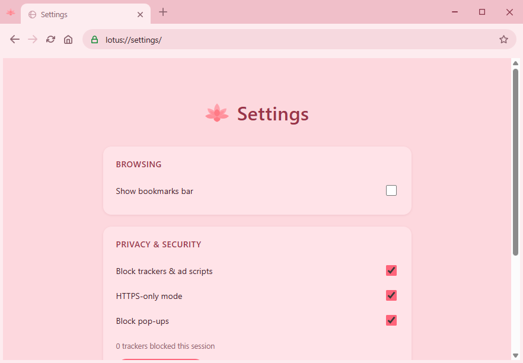
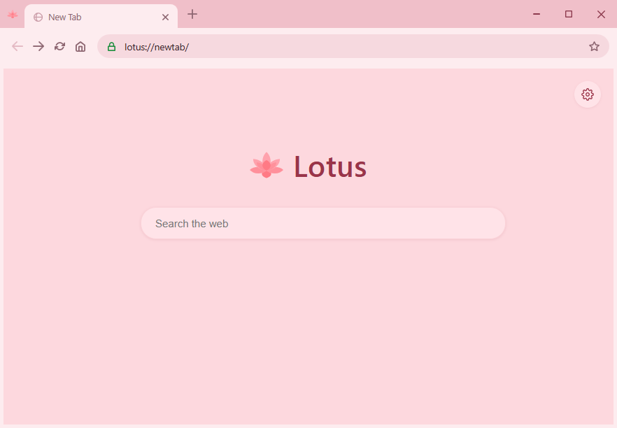

Lotus is a fast, quiet browser for Windows - tabs, bookmarks and downloads, without the clutter. Searches run on DuckDuckGo, so they aren't tracked back to you.


New tab search and privacy settings, both built in
Free · Windows 10 & 11 · The Update Notes are in Our Discord
By downloading, you agree to the Terms of Service and Privacy Policy.
Drag to reorder tabs, and every link opens in the window you already have - Lotus never spawns a second copy of itself.
The address bar and new tab page search with DuckDuckGo, and known tracker domains are blocked automatically wherever you browse.
Files land in a Chrome-style shelf at the bottom of the window, with live progress instead of a popup.
Star a page to pin it to the bookmarks bar, and jump back to anything you've visited from a searchable history panel.
Search text on the current page, zoom in or out, and reach view-source or dev tools when you need them.
Register Lotus as a browser option in Windows settings, and it'll ask for permission before a site can use your camera, mic or location.